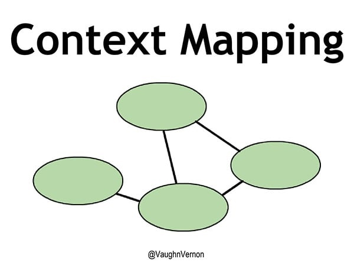
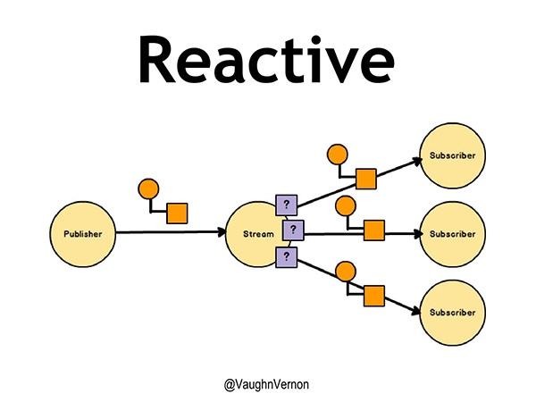
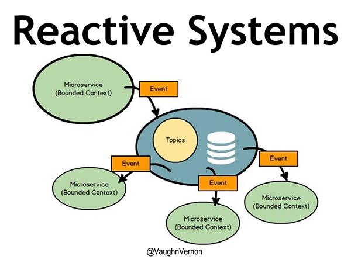
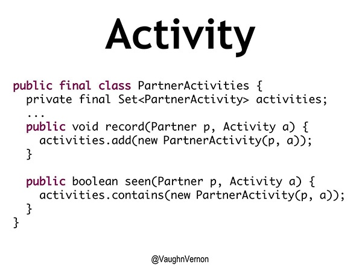
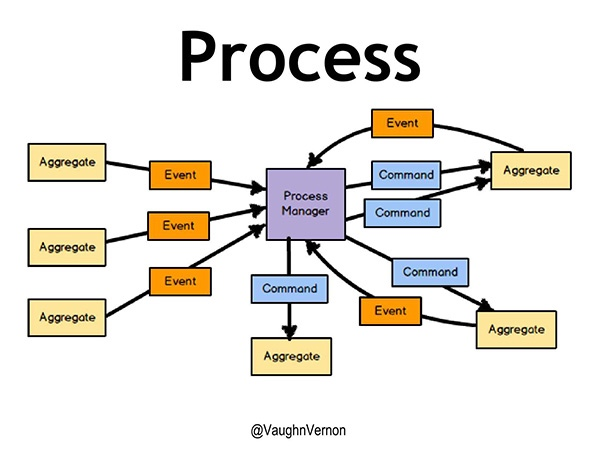
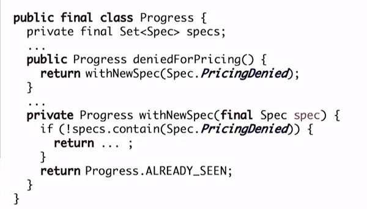

Modeling Uncertainty with Reactive DDD
Posted by Vaughn Vernon, reviewed by Thomas Betts on Sep 29, 2018
原文地址 https://www.infoq.com/articles/modeling-uncertainty-reactive-ddd
Key Takeaways
- Reactive, distributed applications must decide how to handle uncertainty regarding the delivery of messages, including multiple delivery and out-of-order delivery.
- Domain-Driven Design can aid with managing uncertainty through the use of good modeling.
- Rules for handling uncertainty must be defined in business logic that domain experts have agreed to, not buried in a technical implementation.
- The implementation of a message de-duplicator or re-sequencer may initially sound straightforward, but gets unwieldy when operating at real-world scale.
- When the rules have been defined using ubiquitous language, the implementation can be very simple and still robust.
Domain-Driven Design is the way I think software should be developed. It's been a bit of an uphill climb from Evan's original publication of Domain-Driven Design, Tackling Complexity in the Heart of Software, and we've come a long way since. Now there are actually conferences on Domain-Driven Design, and I see a lot of growing interest, including business people getting involved, which is really key.
Reactive is a big thing these days, and I'll explain later why it's gaining a lot of traction. What I think is really interesting is that the way DDD was used or implemented, say back in 2003, is quite different from the way that we use DDD today. If you've read my red book, Implementing Domain-Driven Design, you're probably familiar with the fact that the bounded contexts that I model in the book are separate processes, with separate deployments. Whereas, in Evan's blue book, bounded contexts were separated logically, but sometimes deployed in the same deployment unit, perhaps in a web server or an application server. In our modern day use of DDD, I’m seeing more people adopting DDD because it aligns with having separate deployments, such as in microservices.
One thing to keep clear is that the essence of Domain-Driven Design is really still what it always was -- It's modeling a ubiquitous language in a bounded context. So, what is a bounded context? Basically, the idea behind bounded context is to put a clear delineation between one model and another model. This delineation and boundary that's put around a domain model, makes the model that is inside the boundary very explicit with very clear meaning as to the concepts, the elements of the model, and the way that the team, including domain experts, think about the model.
You'll find a ubiquitous language that is spoken by the team and that is modeled in software by the team. In scenarios and discussions where somebody says, for example,"product," they know in that context exactly what product means. In another context, product can have a different meaning, one that was defined by another team. The product may share identities across bounded contexts, but, generally speaking, the product in another context has at least a slightly different meaning, and possibly even a vastly different meaning.
We're making an effort with DDD to recognize that there is no practical way to have a canonical, enterprise data model where every single element in the model is representative of how every team in the enterprise would want to use it. It just doesn't happen. There's always some difference, and many times there are many differences that make it very painful for one team to try to use the model that another team has created. That's why we're focused on the bounded context with a ubiquitous language.
Once you understand that there is one, very definite definition for an entity, in one team situation, with one ubiquitous language, then you realize that there are other models, developed by other teams. Perhaps even the same team developing this model could be responsible for other models. You have a situation where you have multiple bounded contexts because, naturally, we cannot define every meaning in a single enterprise, or within a single system, for every single concept that we're going to use.
Given that we have multiple contexts and multiple languages, we have to collaborate and integrate between them. To do that, we use a technique called context mapping or a tool called a context map.

Figure 1 - Context Mapping
In this simple diagram, the lines between the bounded contexts are contextual mappings, and could appropriately be called a translation. If one of the bounded contexts speaks one language, and a connected context speaks a different language, what do you need to have between languages so that you can understand one model to another? A translation. Typically, we will try to translate between models to keep each separate model pure and clean.
When creating your context map, don't confuse yourself or place limits on what the line means. While it can cover the technical integration, style or technique, it's very important to define the team relationship between contexts. Whether I'm using RPC or REST isn't important. Who I am integrating with is more important than how I am integrating.
It's very important to define the team relationship between contexts. Who I am integrating with is more important than how I am integrating.
There are various context mapping tools for different types of relationships, including partnership, customer-supplier, or conformist relationships. In a partnership relationship, one team will know a lot about the model on another team. A customer-supplier relationship features an anti-corruption layer between two very separate models, one upstream and one downstream. We will anti-corrupt the upstream model as it's being consumed by the downstream model. If the downstream model needs to send something back to the upstream, then it will translate it back to the upstream model so that data can be consistently and reliably exchanged, with clear meaning.
The strategic design that I've described so far is really the essence of, and therefore the most important part, of Domain-Driven Design.
In some cases, we will decide to model a particular ubiquitous language in a very careful, even fine-grained way. If you think of strategic design as painting with broad brush strokes, then think of tactical design as using a fine brush to fill in all the details.
General Guidance on DDD Modeling
Based on my observations of conference presentations that mention DDD, and my time working with teams, I've been able to identify a few little tips to help with modeling. These aren't meant to call out any specific actions as wrong. Rather, I hope to provide some guidance to nudge you in the right direction.
One thing that we have to remember about DDD when we're modeling, especially tactically, is we need help from domain experts -- It shouldn't just be programmers. We have to limit our use of their time, because the people who play the role of a domain expert on a team will be very busy with other matters relating to the business. Therefore, we have to make the experience very rewarding for them.
Another thing we want to do is avoid the anemic domain model. Whenever you see a presentation about a domain model that includes annotations that will automatically create the getters and setters, Equals(), GetHashCode(), etc., think seriously about running away from that. If our domain models were only about data, then that might be a perfect solution. However, there are some questions we need to ask. How does the data come about? How do we actually get data into our domain model? Is it being expressed according to the mental model of the business and any domain expert who's working with us? Getters and setters do not give you an explicit indication of what the model means -- it's only moving data around. If you're thinking in tactical DDD, then you have to think getters and setters are ultimately the enemy, because what you really want to model are behaviors that express the way that the business considers how work should get done.
When modeling, be explicit. For example, say you saw the business identity of an entity or an aggregate being called a UUID. There's nothing wrong with using a UUID as a business identifier, but why not wrap that in an ID type that is strongly typed? Consider that another bounded context that is not using Java may not understand what a UUID is. You will most likely have to generate a UUID ToString(), and then hold that string in another type, or translate that string from the type when you're sending out events between bounded contexts.
Instead of using BigDecimal directly, why not think about a value object called Money. If you've used BigDecimal, you know that identifying the rounding factor is a common difficulty. If we let BigDecimal slip in all over our model, then how do we round some amount of money? The solution is to use a Money type that standardizes on what the business says should be the rounding specification.
One other little tip is to not worry about what persistence mechanism is used, or what messaging mechanism is used. Use what meets your specific service level agreements. Be reasonable about the throughput and performance you need, and don't complicate things. DDD is not really talking about technology so much as it is in need of using technology.
Reactive Systems
I have been seeing, at least in my world, a trend towards reactive systems. Not just reactive within a microservice, but building entire systems that are reactive. In DDD, reactive behavior is also happening within the bounded context. Being reactive isn't entirely new, and Eric Evans was far ahead of the industry when he introduced eventing. Using domain events means we have to react to events that happened in the past, and bring our system into harmony.
If you were to visualize all the connections at different layers of a system, you'll see patterns that repeat themselves. Whether you're looking at the entire internet, or all the applications at an enterprise level, or individual actors or asynchronous components within a microservice, every layer has a lot of connections and associated complexity. That gives us a lot of very interesting problems to solve. I want to emphasize that we shouldn't solve those problems with technology, but model them. If we are developing microservices in the cloud as a means to form a business, then distributed computing is part of the business that we're working in. Not that distributed computing makes our business (in some cases, it does), but we are definitely solving problems with distributed computing. Therefore, make the distributed computing aspects explicit by modeling them.
I need to take a minute to address what some developers use as an argument against asynchrony, parallelism, concurrency, or any technique that either gives the impression of, or actually facilitates, multiple actions happening at once. Donald Knuth is often quoted as saying, "Premature optimization is the root of all evil." But that's just the end of his expression. He really said,"We should forget about small efficiencies… premature optimization is the root of all evil." Said another way, if we have big bottlenecks in our system, we should address those. We can address those with reactive.
Donald Knuth also said something else very interesting: "People who are more than casually interested in computers should have at least some idea of what the underlying hardware is like. Otherwise, the programs they write will be pretty weird." He's simply saying we need to take advantage of the hardware we have today by how we write our software.
If we go back to 1973 and look at the way processors were being manufactured, there were very few transistors, and the clock speed was below 1MHz. Moore's Law said we'd see the doubling of transistors and processor speed every couple of years. And yet, when we reached 2011, the clock speeds started to fall off. Today, what used to take a year and a half or two years to double clock speed, is now taking about ten years, if not longer. The number of transistors is continuing to increase, but the clock speeds aren't. Today, what we have are cores. Instead of being faster, we have more cores. So what do we do with all these cores?
If you've been keeping up with Spring and the Reactor project, which uses reactive streams, this is essentially what we're able to do now. We have a publisher, and a publisher is publishing something, let's call them domain events, the little orange boxes in Figure 2. These events are being delivered to each of the subscribers on the stream.

Figure 2 - Reactive
Notice the lilac boxes on the stream that have question marks on them. That is actually a policy. And that policy is between the stream and the subscriber. For example, a subscriber may have a limit on how many events or messages it can handle, and the policy specifies the limit for any given subscriber. What's important is that separate threads are being used to run the publisher, the stream, and all three of the subscribers. If this is an intelligently implemented, large, complex component, then the threads are not being blocked at any point in time. Because if the threads are being blocked, then some other piece of the puzzle is starving for a thread. We have to make sure that the implementation underneath is also making good use of threads. This will become more important as we dive deeper into modeling uncertainty.
Within a microservice, we are reactive. But, when we look inside, there are all kinds of components that could be running concurrently, or in parallel. When an event is published inside one of those microservices, it's ultimately being published outside the bounded context to some sort of topic, possibly using Kafka. To keep it simple, let's say there's just one topic. All the other microservices in our reactive system are consuming the events published on the topic, and they're reactively doing something inside their microservice.

Figure 3 - Reactive Systems
Ultimately, this is where we want to be. When everything is happening asynchronously everywhere, what happens? That brings us to uncertainty.
Welcome Uncertainty
In an ideal situation, when we publish a series of events, we want those events to be delivered sequentially, and exactly once. Each subscriber will receive Event 1, followed by Event 2, followed by Event 3, and each event appears once and only once. Programmers have been taught to jealously guard this scenario because it makes us feel certain about what we are doing. And yet, in distributed computing, it just doesn't happen.
With microservices and reactive comes uncertainty, starting with uncertainty about what order events might be delivered in, and if an event has been received more than once, or not at all. Even if you're using a messaging system like Kafka, if you think you're going to consume them in sequential order, you're fooling yourself. If there is any possibility of any message being out of order, you have to plan for all of them being out of order.
If there is any possibility of any message being out of order, you have to plan for all of them being out of order.
I found a succinct definition for uncertainty: The state of being uncertain. Uncertainty being a state means we can deal with it, because we have ways of reasoning about the state of a system. Ultimately, we want to be in a state where we're certain and can feel comfortable, even if that only lasts a millisecond. Uncertainty creeps up and it makes things unpredictable, unreliable, and risky. Uncertainty is uncomfortable.
Addiction
Most developers learned the "right way" to develop software that leads down a path of addiction. When you have two components that need to communicate with each other, it's helpful to refer to one as the client and the other as the server. That doesn't mean it has to be a remote client. The client is going to invoke a method, or call a function, on the server. While that invocation occurs, the client is just sitting there, waiting to receive a response from the server, or possibly an exception will be thrown. In any case, the client is certain that it will get control again. That certainty of execution flow is one type of addiction we have to deal with.
The second type of common addiction is an addiction to the ordering of things, with no duplicates. This is taught to us in school at a young age, when we learn to count, in order. It makes us feel good when we know the order in which things happened.
Another addiction is the locking database. If I have three nodes in my data source, when I write to one of those nodes, I believe I have a firm lock on the database. Which means that when I get back a success response, I believe that the data is persisted on all three nodes. But then you start using Cassandra, which doesn't lock all the nodes, how do you query for a value that hasn't propagated across the cluster, yet?
All of these things create an uncomfortable feeling in us, and we have to learn to deal with that. And yet, it's okay to feel uncomfortable.
Defense Mechanisms
Because we're addicted to certainty, blocking, and synchronization, developers tend to deal with the uncertainty by building a fortress. If you're creating a microservice that is modeled as a bounded context, you design it so that everything within that context is blocking, synchronized, and non-duplicate. That's where we build our fortress, so all the uncertainty exists outside our context, and we get to develop with certainty.
Starting at the infrastructure layer, we create a de-duplicator and a re-sequencer. These both come from Enterprise Integration Patterns.
De-Duplicator
If events 1, 2, 1, and 3 come in, when they pass through the de-duplicator, we're certain that we only have events 1, 2, and 3. That doesn't seem too difficult a problem to solve, but think about the implementation. We'll probably have some caching enabled, but we can't store infinite events in memory. This means having some database table to store the event ID, to allow checking every incoming event to know if it's been seen before.
If an event hasn't been seen before, pass it along. If it has been seen it before, then it can be ignored, right? Well, why has it been seen before? Is it because we didn't acknowledge receiving it? If so, should we acknowledge that we've received it again? How long do we keep those IDs around to say we've seen the event? Is a week enough? How about a month?
Talk about uncertainty. Trying to solve this by throwing technology at it can be very difficult.
Re-Sequencer
For an example of re-sequencing, imagine we see event 3, then event 1, then event 4. For whatever reason, event 2 just hangs out for a really long time. We first have to find a way to re-order events 1, 3, and 4. If event 2 hasn't arrived, have we effectively shut down our system? We may allow event 1 through, but we could have some rule that says to not process event 1 until event 2 arrives. Once event 2 arrives, then we can safely let all four events into the application.
With any implementation you choose, all of these things are hard. There is uncertainty.
The worst part is we haven't solved any business problems, yet. We're just solving technology problems. But, if we acknowledge that distributed computing is part of our business now, then we can solve these problems in the model.
We want to say, "Stop everything. Okay, I'm ready now."But there is no"now."If you think your business model is consistent, it may only be consistent for a nanosecond, and then it's inconsistent again.
A good example of this is a Java call to LocalTime.now(), which is simply not true. As soon as you call into it, it's no longer now. When you get a response back, it's no longer now.
Uncertainty of Distributed Systems
This all brings us back to the fact that distributed systems are all about uncertainty. And distributed systems are here to stay. If you don't like it, change careers. Maybe open a restaurant. However, you'll still be dealing with distributed systems, you just won't be writing them.
Modeling uncertainty matters. It matters because multiple cores are here to stay. It matters because the cloud is here to stay.
Microservices matter, because it's the way everyone is going. Most people approach me about learning Domain-Driven Design because they see it as a great way to implement microservices. I agree with that. Also, people and companies want out of the monolith. They're stuck in the mud, and it takes months to get a release out.
Latency matters. When you have a network as part of your distributed system, latency matters.
IoT matters. Lots of little, cheap devices, all talking over the network.
DDD and Modeling
What I refer to as Good Design, Bad Design, and Effective Design.
You can completely design software well, and yet miss what the business needs. Take SOLID, for example. You can design 100 classes to be SOLID, and completely miss what the business wants. Alan Kay, the inventor of OO and Smalltalk, said the really important thing about objects was the messages sent between them.
Ma, a Japanese word that means "the space between." In this case, the space between the objects. The objects need to be designed well enough so they are able to play their single, responsible role. But it's not just about the insides of the objects. We need to care about the names of the objects and the messages that we send between them. That is where the expressiveness of the ubiquitous language comes in. If you are able to capture that in your model, that is what makes your model effective, not just good, because you will be meeting the needs of the business. That is what Domain-Driven Design is about.
We want to develop reactive systems. We're going to deal with the fact that uncertainty is a state. We're going to start solving some problems.
In his paper, Life Beyond Distributed Transactions, an Apostate's Opinion, Pat Helland wrote, "In a system that cannot count on distributed transactions, the management of uncertainty must be implemented in the business logic." This realization came after a long history of implementing distributed transactions. However, while working at Amazon, he determined that the scale they needed could not be achieved by using distributed transactions.
In the paper, Helland talks about activities. An activity between two partner entities occurs when one entity has a state change and raises an event describing that change, and the second entity eventually, hopefully, it receives that message. But when will it receive the message? What if it is never received? There are a lot of "what ifs" and Pat Helland says these "what if" should be handled by activities.
Between any two partners, each partner has to manage the activity that it has seen from its partner to itself. Figure 4 is how I interpret what Pat Helland meant by these.

Figure 4 - Activity
Every partner has a PartnerActivities object that represents the activities of one related entity we receive activities from. When we see some activity directed toward us, we can record that. Then, at some future time, I can ask, "have I seen this partner activity?" This handles both the case where I'm dependent on that activity having occurred, or to check if I'm seeing it again.
This is fairly straightforward, but gets more complicated in a long-lived entity. Even Pat Helland says this can grow enormously. Any given long-lived entity, potentially with a lot of partners, can result in collecting huge entities, or what DDD would call an Aggregate, just to try and track the activities. Furthermore, this isn't explicit -- it doesn't say a thing about the business itself.
I think we should go further than a PartnerActivity. The technique I'm proposing is to put this in the heart of the software, in the domain model. We eliminate those elements in the infrastructure layer (the de-duplicator and re-sequencer) and we let everything through as it happens. I believe this makes the system less complex.
In an explicit model, we listen to events and send commands that correspond to business actions. Our domain aggregates each contain the business logic for how to handle those commands, including how to respond to the uncertainty. The communication of events and commands is handled by a Process Manager, as depicted in Figure 5. While the diagram may look complex, it's actually fairly straightforward to implement, and follows reactive patterns.

Figure 5 - Process Manager
Each domain entity is responsible for tracking its state, based on the commands it receives. By following good DDD practices, the state can be safely tracked based on these commands, and using event sourcing to persist the state change events.
Each entity is also responsible for knowing how to handle any potential uncertainty, according to decisions made by domain experts. For example, if a duplicate event is received, the aggregate will know that it has already seen it, and can decide how to respond. Figure 6 shows one way to handle this. When a deniedForPricing() command is received, we can check the current progress, and if we already have seen a PricingDenied event then we won't emit a new domain event, and instead respond indicating that the denial was already seen.

Figure 6 - Handling Duplicate message
This example is almost underwhelming, but that's intentional. It shows that treating uncertainty as part of our domain means we can use DDD practices to make it just another aspect of our business logic. And that really is the point of DDD; to help manage complexity, such as uncertainty, in the heart of our software.
Copyright © 2015 Powered by MWeb, Theme used GitHub CSS.